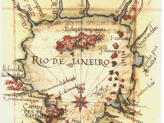

“Senhorita Carioca”
Project approved by the Ministry of Culture (Brazil) in 2002 and deemed to be a literary, artistic or humanist work under the Rouanet law to incentivate culture.
A previously unpublished work, including in Brazil, on the history and influences of Rio de Janeiro, a major cradle of culture, a living link between Europe, Africa and Asia. “Senhorita Carioca” - the book - will recount the history of this tropical city, which has become one of the loveliest and most famous cities in the world. Starting with the official version of history, or that of the “little guys” that official history prefers to ignore, but was nevertheless witnessed, "Senhorita Carioca" shows the reader and makes him live through the day-to-day life and the formation of the Brazilian people and the soul of Rio de Janeiro via the construction of the city itself. Important characters in both history and science, such as Americo Vespucci, Columbus, Napoleon, Humboldt, Cook, von Martius and von Spix, to name but a few, had some connection to the City. Marks, whether these be physical, political, economic or cultural, and which have helped to make Rio de Janeiro what it is today. Examples include when the city had an epidemic of fever, the day to day life in the biggest communal lodging-house of the 19th century, the details of the negotiation which nearly led to Sugar Loaf being raised to the ground, and an exotic touch, with exclusive recipes for snakes, alligators and other animals, which have not been part of the Brazilian diet for more than a century, taken from ancient cookbooks. The smells and sounds of the dawning day are also in "Senhorita Carioca", which has a light touch in the way it recounts its tale. The reader navigates his way through the text, with boxes for additional information, maps from different times and pictorial content, a lot of which has not been seen before, even in a city which has been one of the most depicted in the world during the past two hundred years. One can see the construction and evolution of the city space and means of transport, the importance of bathing and how water determines how the city can be utilized; beaches, bikinis, religion, music, capoeira, carnival, football, feijoada, immigrants, architecture, habits and customs which make up one of the most varied landscapes in different times, described from eyewitnesses in letters, diaries, cartoons, news stories or advertising. The more than 200 illustrations, selected with great care, are signed by artists of many nationalities, styles, techniques and time periods, and come from private collections or the most important archives in Brazil and Europe. In order to give the reader a better understanding of the history of what is one of the best-loved cities in the world, to be able to go behind the scenes in the early days of samba, to understand the love for football, the beach and the suntan, “Senhorita Carioca” invites the reader to get to know the city of Rio de Janeiro through its intimate history, to follow paths in a place that started out as a minor port and became the Capital of the Portuguese Empire, then Capital of the Court, then of the Empire and of the Republic. To the eyes of the stranger, voyage through time and space, shedding light on a presence, which is still alive today in the essence of the culture of Rio de Janeiro, showing us what it means to be Brazilian. The reader grows along with the city as he follows its trajectory, and has fun watching Rio overcoming its difficulties and abuses, “Senhorita Carioca” tells of a living city, during the five centuries covered, courteously available, courageously feminine, open to a joie de vivre and to the future. One can feel the link between the not-do-distant past - perhaps lost - of the Old world, the direction that the Brazilian spirit gives to the New World, re-establishing communication with all those who recognise a little part of themselves in the story. |
|  “Senhorita Carioca” Project approved by the Ministry of Culture (Brazil) in 2002 and deemed to be a literary, artistic or humanist work under the Rouanet law to incentivate culture. |
|
|||
|
||||